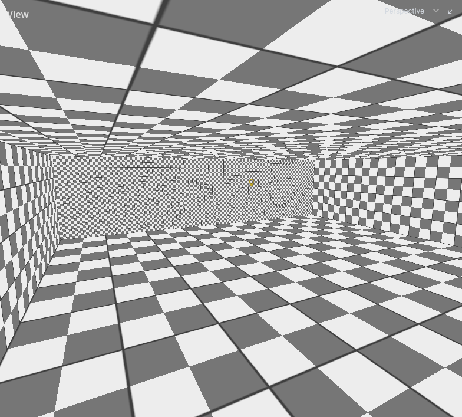
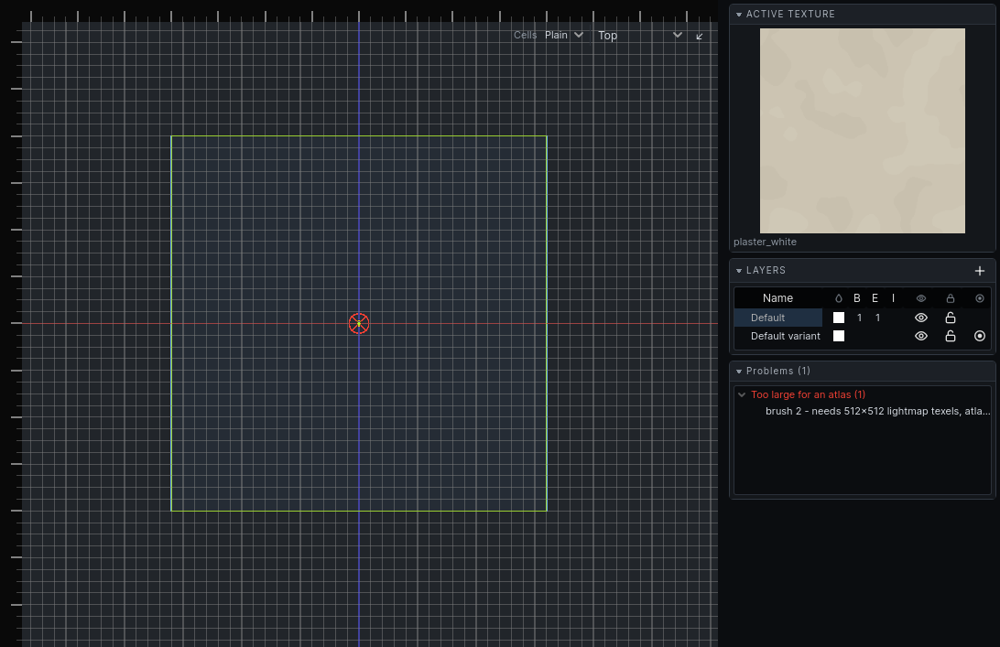

Baking
A bake works out the level's lighting and stores it with the map. Until a map is baked it has no lighting of its own. How to run a bake and set its options: Lighting.
What a bake produces
- A lightmap for every lit surface: room walls, detail, terrain, and entity brushwork set to Bake into the world.
- A lightmap for every prop.
- Light probes through every room, which light what moves. See Lighting.
- A list of bake warnings: what the bake could not do.
Sky faces are not baked: they are holes. Entity brushwork is lit from the probes unless it is baked into the world.
A map with variants has one bake per variant. A bake lights the variant in effect. See Variants.
When a bake is out of date
The lightmap tool shows the variant in effect as baked, not baked or out of date.
A bake goes out of date when anything it read changes:
| Changes the bake | Does not |
|---|---|
| Moving, adding or removing brushes | Moving a guard, a sound or any other entity that does not light |
| Textures, texture alignment, lightmap scale | Hiding a layer |
| Brush properties, such as water clarity | Colour bleed, which shows at once |
| Lights, props, decals, the sky |
An out-of-date bake stays on screen. A wall that has moved since the bake has no lighting to show and draws unlit until you bake again. Everything else keeps its old lighting.
A quick bake lights those walls with direct light alone and leaves the rest as it is: no bounce onto them, no reflections from water, and props and light probes untouched. It fills the gaps while you work. The bake stays out of date until a full bake.
A quick bake is rough on purpose:
- A surface a bake has already left dark is not tried again, even if an edit has since let light reach it.
- A lamp lights the new surfaces only if it can see the middle or a corner of one of them.
- The sun lights them only through sky within a couple of thousand units.
Lightmap scale
A face's lightmap scale is how many world units one lightmap texel covers. The default is 16 for faces and 8 for props.
| Lower scale | Higher scale |
|---|---|
| Sharper shadows | Blurrier shadows |
| More lightmap space | Less lightmap space |
| Slower bake | Faster bake |
Set it per face in the face tool, or per prop in its properties. The Lightmap Scale view mode shows every face's scale. See Texturing.
Lower it where shadows need edges: a lamp by a window frame, the bars of a grate. Raise it on large surfaces that are evenly lit or dark.

Bake warnings
A bake lists what it could not do. Warnings appear as crosses in the 2D views and as rows in the Problems panel, where choosing one selects the face or prop and puts the views on it. See Problems.
| Warning | What happened | What to do |
|---|---|---|
| Too large for an atlas | The face needs more lightmap texels than a whole lightmap holds. It was skipped and draws unlit. | Raise the face's lightmap scale, or split the face. |
| More lights than four | More than four dynamic light groups reach the face or prop. The extras were dropped from it. | Put lights that belong to one effect in one light_group, give lamps a radius, or move a light. |
| Atlas spent on black | A large face got almost no light: at least 90% of its texels are unlit. Nothing looks wrong, but the space is wasted. | Raise the face's lightmap scale, or light it. |
Each warning's detail says the numbers: how many texels were needed, how many times a dropped light reached one of the face's texels, what share was unlit.
Bake warnings describe the last bake. They are replaced by the next one, and editing does not clear them.
Warnings from the carve itself, Rooms that nearly touch and Rooms that overlap ambiguously, are circles rather than crosses. They say the world will bake wrong, not that it did. See The carved world.
